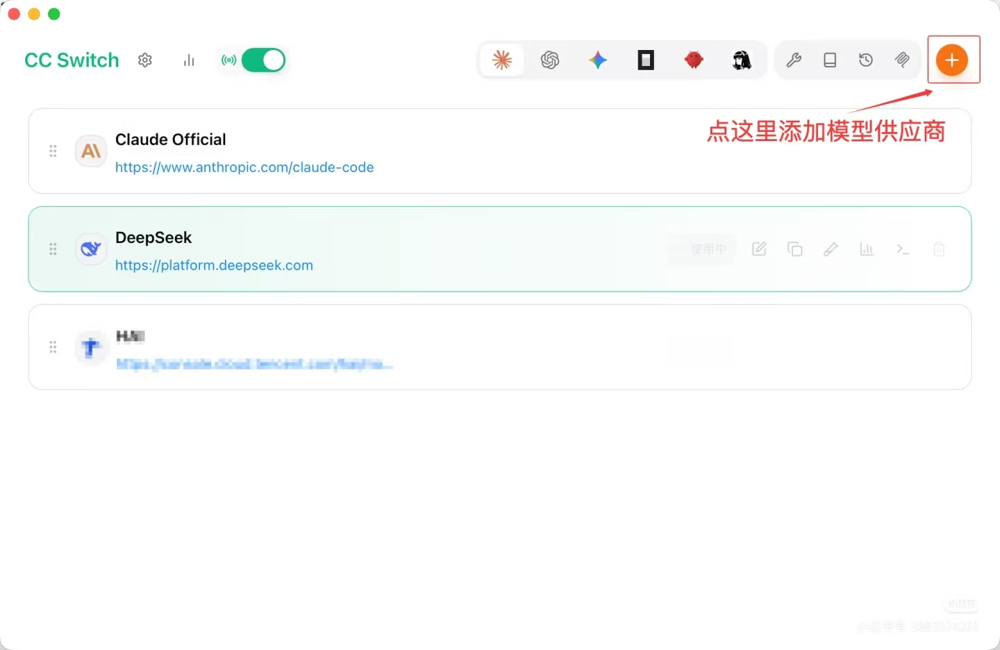
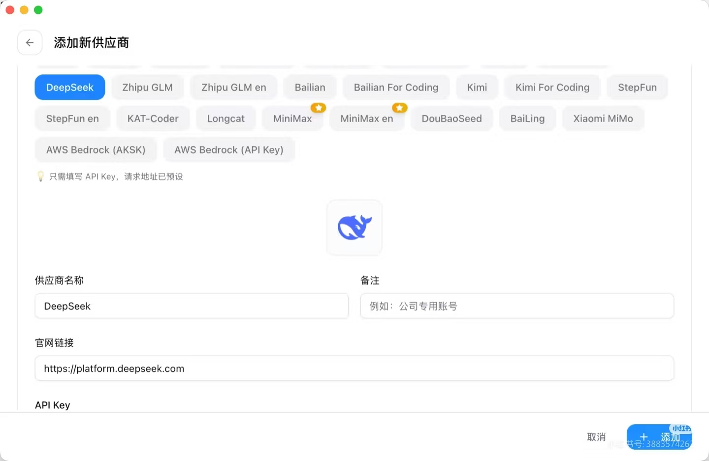
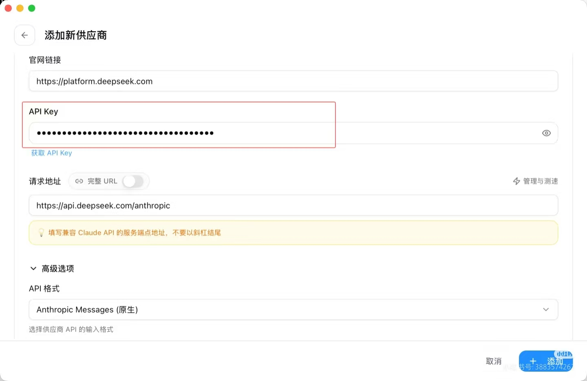
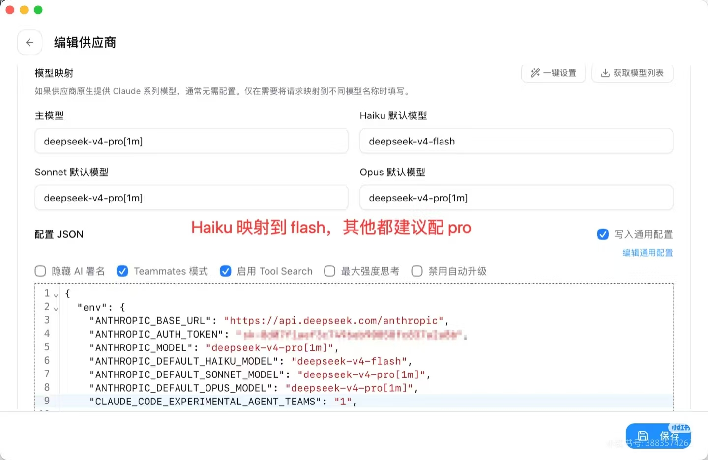
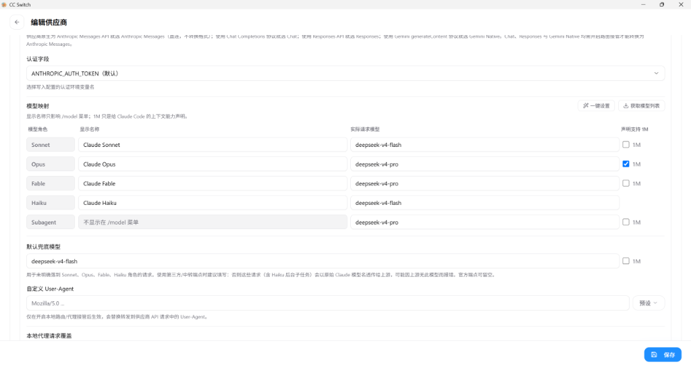
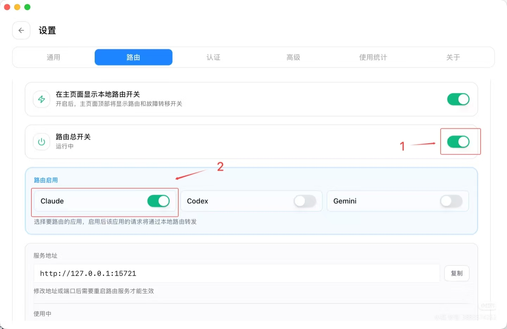

新电脑完整配置教程：Claude Code + cc-switch + DeepSeek（简化版）
适用环境：Windows 10/11，无需 VPN 最后更新：2026年9月2日
参考文献：前几天发现 Claude Desktop 更新之后会强校验模型名称…… 【小红书】上有超棒的笔记，快来瞧瞧！https://xhslink.cn/o/10wPoVptyVv
前置条件
| 项目 | 说明 |
|---|---|
| 操作系统 | Windows 10/11 |
| Node.js | 版本 >= 16（下载地址） |
| DeepSeek API Key | 从 platform.deepseek.com 获取 |
| 网络 | 无需 VPN，直连即可 |
第一步：安装 Node.js
- 访问 https://nodejs.org/，下载 LTS 版本
- 双击安装，一路点
Next - 安装完成后，打开 CMD，验证：
node --version
npm --version
第二步：安装 Claude Code
npm install -g @anthropic-ai/claude-code
验证：
claude --version
第三步：安装 cc-switch 桌面版
3.1 下载
唯一官网： https://ccswitch.io
| 操作系统 | 下载文件 |
|---|---|
| Windows | CC-Switch-v{version}-Windows.msi |
| macOS | CC-Switch-v{version}-macOS.dmg |
| Linux | CC-Switch-v{version}-Linux.AppImage 或 .deb |
3.2 安装
- Windows：双击
.msi，按提示安装 - macOS：双击
.dmg，拖入「应用程序」文件夹 - Linux：
.deb用sudo dpkg -i安装；.AppImage赋予执行权限后直接运行
第四步：配置 cc-switch（一体化完成）
4.1 启动 cc-switch
安装后打开 cc-switch 桌面应用
4.2 添加 DeepSeek 供应商
点击右上角的 + 按钮添加新模型供应商：

在弹出的「添加新供应商」页面中选择 DeepSeek（或其它供应商标签），填写供应商名称、官网链接等信息：

填写 API Key，确认请求地址为 https://api.deepseek.com/anthropic：

| 字段 | 填写内容 |
|---|---|
| 供应商名称 | DeepSeek |
| 备注 | 我的 DeepSeek（可选） |
| APIKey | sk-你的DeepSeek密钥 |
| 请求地址 | https://api.deepseek.com/anthropic（关键！必须用这个地址） |
4.3 配置模型映射（关键！）
在「编辑供应商」页面的「高级选项」→「模型映射」中填写：

完整模型映射配置图（含 Sonnet / Opus / Fable / Haiku / Subagent 等所有角色）：

| 模型角色 | 显示名称 | 实际请求模型 | 声明支持 1M |
|---|---|---|---|
| Sonnet | Claude Sonnet |
deepseek-v4-flash |
不勾选 |
| Opus | Claude Opus |
deepseek-v4-pro |
勾选 |
| Fable | Claude Fable |
deepseek-v4-pro |
不勾选 |
| Haiku | Claude Haiku |
deepseek-v4-flash |
不勾选 |
| Subagent | 不显示在 /model 菜单 |
deepseek-v4-pro |
不勾选 |
| 默认兜底模型 | - | deepseek-v4-flash |
不勾选 |
下方「配置 JSON」区域建议勾选：Teammates 模式、启用 Tool Search，Haiku 映射到 flash，其他都建议配 pro。
4.4 开启路由 + 同步配置（二合一）
- 开启路由：在「设置 → 路由」页面打开 「路由总开关」，并勾选 「Claude」，确认状态变为 「运行中」：

- 同步配置（关键一步）：在 cc-switch 中点击 「写入配置」 或 「应用」 按钮，cc-switch 会自动把以下内容写入
C:\Users\%USERNAME%\.claude\settings.json：
{
"env": {
"ANTHROPIC_AUTH_TOKEN": "sk-你的DeepSeek密钥",
"ANTHROPIC_BASE_URL": "http://127.0.0.1:15721",
"CLAUDE_CODE_DISABLE_UNKNOWN_MODEL_WINDOW_ENFORCEMENT": "1"
}
}
注意：这一步是自动完成的，你不需要手动创建或编辑
settings.json文件。
- 记下服务地址：
http://127.0.0.1:15721（已自动写入配置）
第五步：验证配置
5.1 确认 cc-switch 路由正在运行
- 打开 cc-switch GUI
- 确认「路由总开关」是 「运行中」
- 确认「Claude」已勾选
5.2 启动 Claude Code
在 CMD 中执行：
claude
5.3 选择模型
进入后输入：
/model
选择 claude-opus 或 Default (recommended)，按 Enter。
5.4 测试对话
输入：
你好
如果 DeepSeek 正常回复，说明配置成功！
第六步：常用命令速查
| 命令 | 作用 |
|---|---|
claude |
启动 Claude Code |
/model |
切换模型 |
/status |
查看当前配置 |
/theme |
更改主题 |
/help |
查看所有命令 |
/exit |
退出 |
常见问题排查
| 问题 | 原因 | 解决方法 |
|---|---|---|
启动后报 403 |
API Key 无效或余额不足 | 检查 DeepSeek 账户余额和 API Key |
启动后报 ECONNRESET |
路由服务未启动 | 检查 cc-switch 路由是否运行 |
模型报错 not found |
模型映射配置错误 | 检查 cc-switch 中的实际请求模型名 |
/model 菜单无选项 |
Claude Code 未连接到路由 | 确认已点击「写入配置」，检查 settings.json 中的 BASE_URL |
| 启动后仍连接官方 API | settings.json 未被写入 |
在 cc-switch 中重新点击「写入配置」 |
| cc-switch 无法启动 | 端口被占用 | 在 cc-switch 中修改服务端口，同步修改 settings.json |
总结
| 关键配置项 | 正确值 |
|---|---|
| DeepSeek API 地址 | https://api.deepseek.com/anthropic（必须用这个） |
| cc-switch 服务地址 | http://127.0.0.1:15721 |
| settings.json 写入方式 | cc-switch 自动写入，无需手动编辑 |
| 模型映射 | claude-opus → deepseek-v4-pro |
| Claude Code 模型 | /model 中选择 claude-opus |
核心要点
- DeepSeek 地址必须用
https://api.deepseek.com/anthropic，不能用/v1 - cc-switch 路由必须开启，Claude Code 才能通过本地网关转发请求
- 模型映射必须配对，Claude 模型名 → DeepSeek 实际模型名
- 配置由 cc-switch 自动写入，不需要手动创建
settings.json
附录：完整 settings.json 参考配置（使用本地代理 cc-switch）
如果使用本地代理（cc-switch 路由地址 http://127.0.0.1:15721，子代理模型指定为 deepseek-v4-pro），可参考以下完整 JSON 写入 C:\Users\%USERNAME%\.claude\settings.json：
{
"env": {
"ANTHROPIC_AUTH_TOKEN": "PROXY_MANAGED",
"ANTHROPIC_BASE_URL": "http://127.0.0.1:15721",
"ANTHROPIC_DEFAULT_FABLE_MODEL": "claude-fable-5",
"ANTHROPIC_DEFAULT_FABLE_MODEL_NAME": "Claude Fable",
"ANTHROPIC_DEFAULT_HAIKU_MODEL": "claude-haiku-4-5",
"ANTHROPIC_DEFAULT_HAIKU_MODEL_NAME": "Claude Haiku",
"ANTHROPIC_DEFAULT_OPUS_MODEL": "claude-opus-4-8[1M]",
"ANTHROPIC_DEFAULT_OPUS_MODEL_NAME": "Claude Opus",
"ANTHROPIC_DEFAULT_SONNET_MODEL": "claude-sonnet-4-6",
"ANTHROPIC_DEFAULT_SONNET_MODEL_NAME": "Claude Sonnet",
"CLAUDE_CODE_EXPERIMENTAL_AGENT_TEAMS": "1",
"CLAUDE_CODE_SUBAGENT_MODEL": "deepseek-v4-pro",
"ENABLE_TOOL_SEARCH": "true"
},
"model": "claude-opus"
}